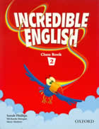

Английски за деца във втори клас
Програма Primary 1- 4 клас
Тази програма е с продължителност четири години. Целта е формиране на езикова грамотност у учениците чрез
поетапно надграждане на уменията за слушане с рабиране, говорене, четене и писане. Темите на уроците в учебника са интересни
и близки до децата. В часовете са интегрирани игри, песни и състезания. Така уроците по английски език се превръщат в любимо
занимание. Използваме и допълнителни материали, за да развием говоренето. Децата усвояват лексика и граматика, като
четат адаптирани книжки на английски. Забавляват се като имитират героите - експериментират с глас и движение. Това са и първите стъпки за непренудено общуване
на английски език. Четенето на адаптирана литература обогатява и общата им култура. Уроците се провеждат изцяло на английски
език. Учениците слушат автентична английска реч под формата на видео уроци, разкази, диалози, научни материали, песни и
др.
Учебната система, по която учат децата е Incredible English. Тя е изключително богата на лексика и
граматични конструкции. Уроците имат връзка с други учебни предмети като математика, човек и природа и изобразително
изкуство. Децата учат английски с помощта на папагала Нортън, който е винаги готов да се забавлява заедно с
тях. А песничките стимулират децата да говорят английски дори и вкъщи.
Primary 2
Програмата Primary 2 е създадена специално за деца във 2 клас, които са
изучавали английски език. В тази програма децата четат две традиционни английски приказки,
гледат видео уроци и са активни участници в допълнителните програми на Englaland.
Какви умения и знания ще придобие детето Ви в края на програмата?
- Говоря си с приятели за нещата, които обичам да правя.
- Споделям какво харесвам и какво не харесвам.
- Казвам какво мога и какво не мога да правя.
- Разбирам и чета изречения от историите в учебника.
- Написах съчинения от 80 думи за любимата си играчка, животинчето което харесвам най-много, за моето семейство и др.
- Играя игри и пея песнички на английски език.
- Уча ритъма на езика и римувам думички.
- Прочетох две книжки на английски език.
Учебната година в ENGLALAND е от октомври до май.
Програмата включва 120 учебни часа по 40 минути.
Посещенията са 2 пъти седмично по 2 учебни часа.
Учебни групи с максимум 10 деца.
Primary 2

Децата, които започват чуждоезиковото си обучение в ранна детска възраст, усвояват езика с лекота и желание. Постепенно стават по-уверени в изучаването на езика и не се притесняват да използват наученото в различни ситуации. Плавното надграждане на езиковите умения спомага за усвояване на трайни знания.Нашите уроци по английски език са интересни и забавни. Всеки преподавтел в Englaland дава цялата си енергия и любов, за да накара малчуганите да се чувстват добре и да учат с удоволствие. За да придобиете по-ясна представа какво представляват уроците по английски и до каква степен Вашите деца са усвоили материала, ние ще Ви поканим на открит урок в края на първия срок.